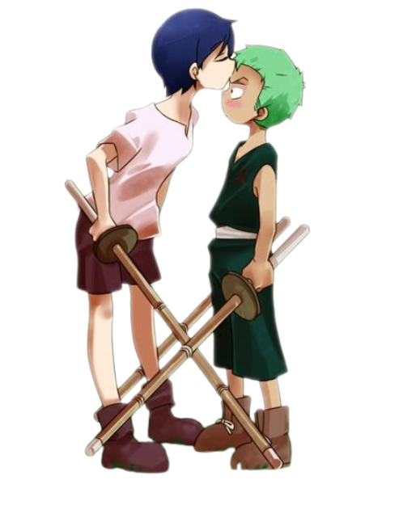

ZORO
ZORO
ZORO
ZORO
Ророноа Зоро — мечник-виртуоз, первый член команды Мугивар (Соломенной Шляпы). Родился в деревне Шимотсуки, где с детства тренировался в додзё под руководством отца Куины.
Зоро с ранних лет проявлял невероятную силу и упрямство. Он постоянно проигрывал Куине, но это только закаляло его дух. После трагической гибели Куины он дал клятву стать величайшим фехтовальщиком в мире.
До встречи с Луффи Зоро был известен как "Охотник на пиратов" — он выслеживал преступников, чтобы заработать на жизнь. Его репутация росла, и о нём заговорили в Восточном Блю.
В Шеллс-Тауне Зоро был прикован к столбу пиратами Моргана. Луффи освободил его и предложил стать пиратом. Зоро согласился, поставив условие: он станет величайшим фехтовальщиком.
Зоро прошёл все арки вместе с командой: от Алабасты до Вано. Он всегда был вице-капитаном, защищая друзей и следуя своей мечте. Его сила росла с каждой битвой.
В арке Вано раскрылась связь Зоро с легендарным самураем Рюмой. Он получил меч Энма и победил Кинга, подтвердив свою силу. Ода намекнул, что Зоро может быть потомком Рюмы.
